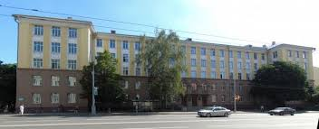
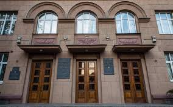
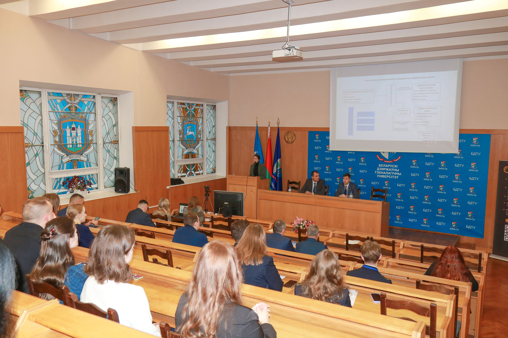
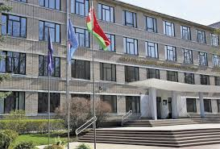
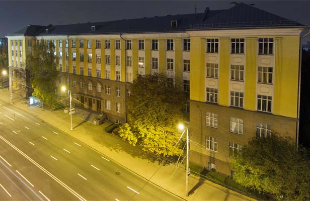
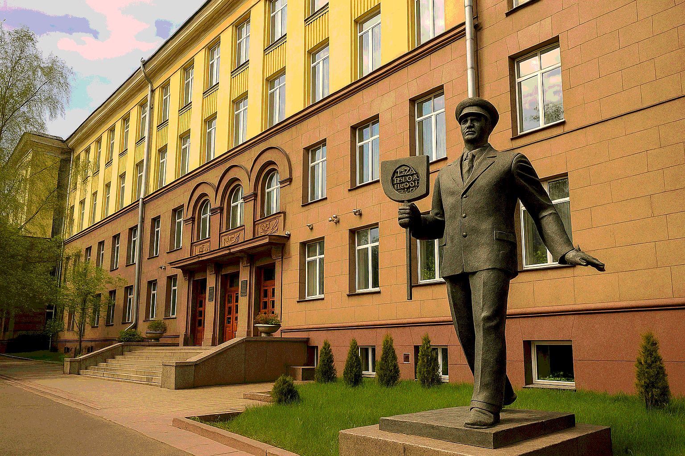

Бгту
Белорусский государственный технологический
университет на протяжении всей своей более чем 90-летней истории занимает ведущие позиции в
образовательной и научной сферах. Сегодня он является уникальным, динамично развивающимся инновационным
и научным центром. Университет успешно развивает различные научные направления в областях лесного
хозяйства, деревообработки, производства строительных материалов, химии и химический технологий,
экономики, полиграфии.БГТУ имеет высокий международный авторитет, сертифицировал свою систему
менеджмента качества (СМК) в национальной и немецкой системе аккредитации DGA. Университет трижды
аккредитован в качестве научной организации в Государственном комитете по науке и технологиям Республики
Беларусь и Национальной Академии Наук Беларуси (свидетельства №52 от 11.09. 2011г., № 52 от 15.08.2016
г., № 52 от 11.10.2021 г.).
Ученые университета выполняют задания государственных программ
различных уровней, отдельные международные и инновационные проекты, гранты, проекты Белорусского
республиканского фонда фундаментальных исследований, хозяйственные договора по заказам предприятий и
организаций.
Заказчиками научных исследований и разработок, выполняемых учеными университета в рамках
научно-технических программ различных уровней, являются Министерство лесного хозяйства, Министерство
образования, Министерство промышленности, Министерство природных ресурсов и охраны окружающей среды,
Министерство энергетики, Министерства архитектуры и строительства, Министерство по чрезвычайным
ситуациям, Министерство сельского хозяйства и продовольствия, концерн «Белнефтехим», концерн
«Беллесбумпром» и др.
Научные исследования по хозяйственным договорам с предприятиями
направлены на решение важных прикладных проблем, обеспечивающих выход на мировой уровень разработок по
новым композиционным, строительным материалам и изделиям, химическим технологиям и технике, лесного
хозяйства и деревопереработке, полиграфии. Общее количество предприятий и организаций, с которыми
сотрудничает БГТУ в рамках хозяйственных договоров, составляет более 300. Наши партнеры –
лесохозяйственные предприятия, лесопроектные организации, Национальные парки и заповедники,
лесоохотничьи хозяйства Республики Беларусь, крупнейшие предприятия Республики Беларусь: ИП «Принткорп»,
ОАО «Борисовский шпалопропиточный завод», ОАО «СветлогорскХимволокно», РУП «Белгослес», РУП «Институт
БелНИИС»,
Фотографии




Бгту

договоры о сотрудничестве с ОАО "Белинвестбанк" и ОАО «АСБ Беларусбанк», в соответствии с
которыми Стороны будут активно взаимодействовать в области проведения научных исследований,
предоставления образовательных услуг, развития мотивации и поддержки талантливых студентов;
договор об аккредитации оператора центра коллективного пользования в Технопарке «Сколково»,

2018 г. - при поддержке ИООО «Кроноспан» в БГТУ создана ксилотека, которая представляет
собой уникальную коллекцию, состоящую из более 2 000 образцов древесины лесных видов Беларуси и
большинства стран мира, а также лабораторию для изучения свойств древесного материала, в том числе для
выбора под специфические условия его эксплуатации и применения.